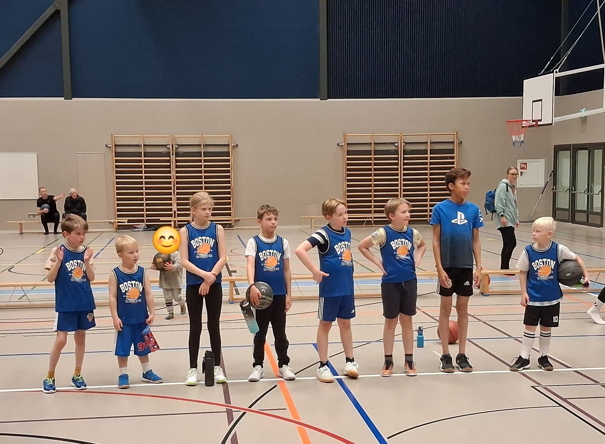
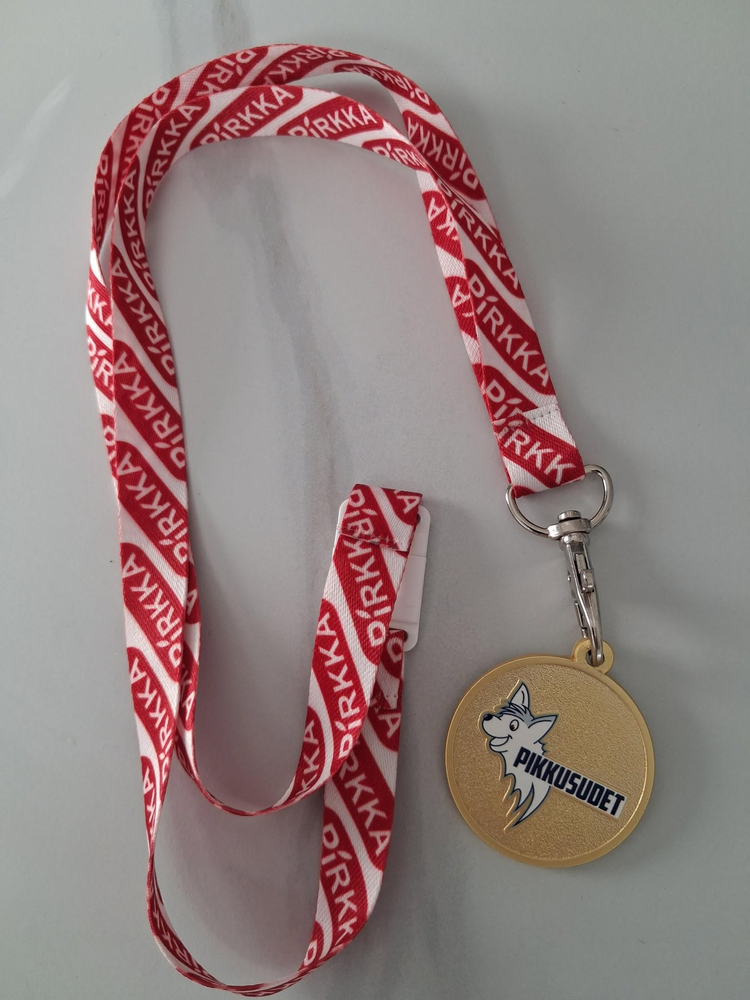

KiiRin U10-joukkue Pikkususi-riehassa 10.10.2026

U10 vietti mukavan päivän Kempeleessä
KiiRin U10-joukkue kävi tutustumassa koripallon ottelutapahtumaan toiminnan kautta, Kempele Wild Duckz ja Suomen Koripalloliiton järjestämässsä turnauksessa.
Mainiot ja rehdit vastustajat saimme Kempeleestä ja kaksi kertaa Ynnistä.
Turnaus sujui hienosti, vaikka vanhemmilla aika kovasti jännitti. Jollekin aikainen peliaika olisi voinut olla hankala, mutta olemme nerokkaasti treenanneet joka lauantai klo 9.00.
Kuinka pelit sitten sujui? Riippuen keneltä kysyy, meidän joukkue voitti kaikki! ...Taitaa jollain toisella porukalla olla sama mielipide.
Pisteitä ei siis laskettu virallisesti, mutta joukkueiden mielipiteisiin on helppo yhtyä - pelkkiä voittajia osallistui tähän turnaukseen!
Turnauksen lopuksi kaikille annettiin kultainen Pikkususi-mitali kaulaan.
Ilmarille ja Laurille iso kiitos valmennuksesta! Kypsästi toimivia urheilijan alkuja kasvaa teidän ohjauksessa.
Kiitokset myös järjestäjille! Toivottavasti päästään samoihin bileisiin keväällä!
